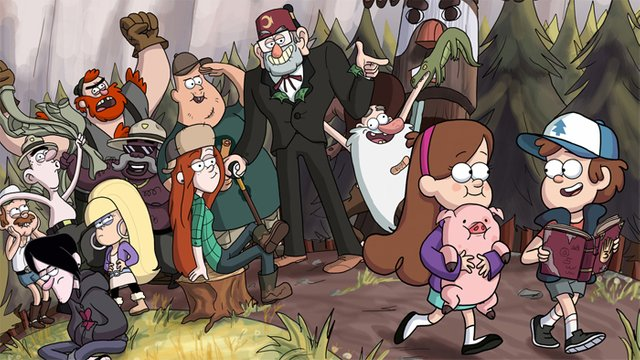

El tío Stan invita a los gemelos Dipper y Mabel Pines a pasar el verano en el misterioso pueblo de Gravity Falls, Oregón. Los niños lo ayudan en la Cabaña del Misterio, la trampa turística que posee. Los gemelos tratan de adaptarse al entorno diferente, pero sienten que hay algo extraño en Gravity Falls y comienzan a descubrir sus secretos. Cuando Dipper descubre un diario críptico que ofrece el conocimiento de los misterios de la ciudad, él y Mabel lo usan para vencer al mal, y luchan para descubrir los inminentes misterios que los rodean. Más info
El programa se estrenó el 15 de junio de 2012 y fue conocida en Hispanoamérica como Gravity Falls: un verano de misterios.
Es una serie de televisión animada estadounidense de comedia y misterio creada por Alex Hirsch para Disney Channel y Disney XD y duró hasta el 15 de febrero de 2016.El 20 de noviembre de 2015, Hirsch anunció que terminaría con su segunda temporada.
La crítica exaltó y elogió a Gravity Falls por su escritura, personajes, actuaciones de voz, animación, humor y atractivo multigeneracional.La serie ganó dos premios Emmy, tres Annie y un BAFTA infantil, entre otros galardones y nominaciones. Registró un alto nivel de televidentes entre niños, adolescentes y adultos jóvenes durante su transmisión, fue la serie de mayor audiencia en Disney XD durante y principios de 2016.
Ha atraído a un fandom amplio, se le ha considerado una influencia para muchos programas animados que se produjeron después17 y ha generado diversos productos oficiales.
| Personaje | Descripción |
| Dipper Pines | Es un niño inteligente de 12-13 años |
| Mabel Pines | Melliza de Dipper, 5 minutos mayor que él y la coprotagonista de la serie |
| Stanley Pines | Es el tío abuelo de Dipper y Mabel, y dueño de "La Cabaña del Misterio" |